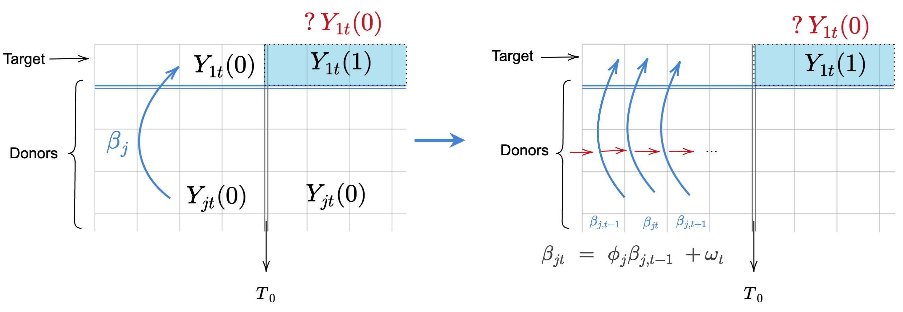
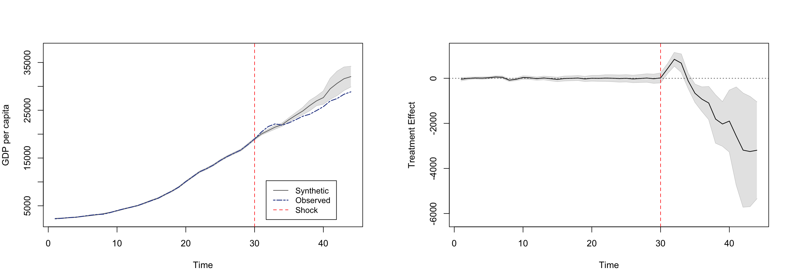

I am enthusiastic about causal inference, probablistic machine learning, and time-series analysis. I am planning to pursue a PhD in 2023 and I am looking for any potential opportunities!
I am working on a generalized synthetic control method with state-space model under the direct guidance of Dr. Linda Valeri, Dr. Mingzhang Yin and advices fromDr. David Blei. We propose a generalized synthetic control method with time-varying weights based on state-space model (GSC-SSM), allowing for a more flexible and accurate construction of counterfactual series.   # Covariates Adaptive Design
Under the guidance of Dr. Jingshen Wang, I have also conducted research in sequential randomization under a high-dimensional setting. We investigated the theoretical properties of statistical methods to achieve covariates balance for randomized clinical trials and proposed a new setting for Pairwise Sequential Randomization with many covariates. We further showed better efficiency of this sequential randomization.
I was a visiting student in UCSD during my third academic year under the supervision of Prof. Mohit Jain and Dr. Tao Long, working on the topic of Integrative High-Throughput Metabolomics Analysis of Pulmonary Arterial Hypertension Phenotypes and Outcomes. Our paper:
Alotaibi, M., Shao, J., Pauciulo, M. W., Nichols, W. C., Hemnes, A. R., Malhotra, A., … & Jain, M. (2022). Metabolomic Profiles Differentiate Scleroderma-PAH from Idiopathic PAH and Correspond with Worsened Functional Capacity. CHEST
In Peking University, I conducted my research on the topic of Image Based Age and Life Expectancy Prediction of C.elegans under Professor Jingdong Han’s supervision. In this project, I developed a deep learning model based on inception-ResNet-V2 for the image processing of microscopic pictures of Caenorhabditis elegans to predict their mortality and frailty.